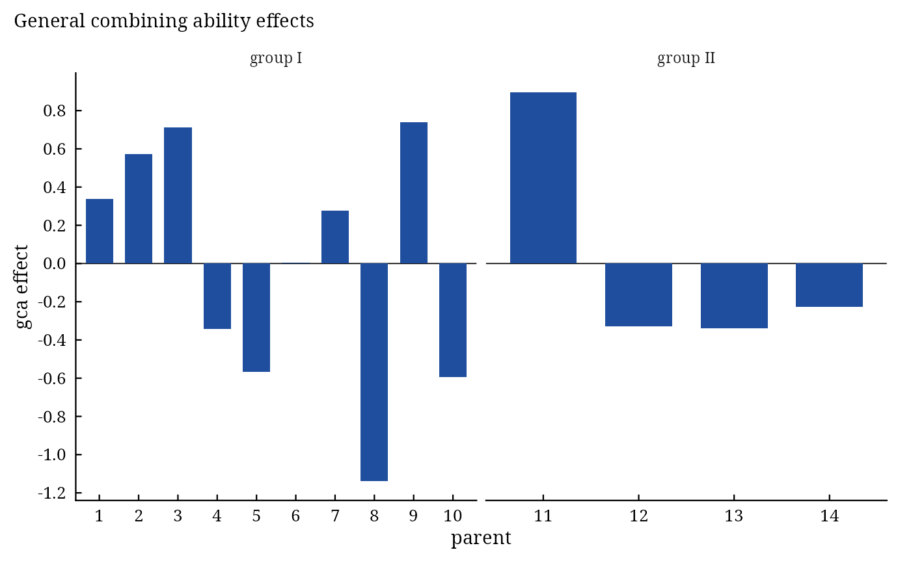

Partial diallel analysis (crosses between two groups of parents)
Source:R/PartialDiallel.R
PartialDiallel.RdPartialDiallel() analyses a partial diallel in which each of \(L\) parents of a first group is crossed
with each of \(M\) parents of a second group (a factorial mating design, also known as line by tester or North
Carolina design II), from the plot data of a randomized complete block experiment: the analysis of variance of the
general combining ability of each group and of the specific combining ability, the variance components, and the
gca and sca effects.
Arguments
- y
response: a column of
datagiven by name (y = Yieldory = "Yield") or a numeric vector of lengthnrow(data).- Rep
replicate (block): a column of
dataor a vector, as fory.- Cross1
parent of group I (rows) of each plot: a column of
dataor a vector, as fory.- Cross2
parent of group II (columns) of each plot: a column of
dataor a vector, as fory.- data
a data frame (or
data.table) with one row per plot.
Value
An object of class c("da_partial", "da_result", "list"):
Means\(L \times M\) matrix of cross means.
ANOVAanalysis of variance (class
anova):Treat,GCA I,GCA II,SCA,Error.Genetic.ComponentsComponents(variance components ofGCA I,GCA II,SCA) andPercent(share of the treatment sum of squares, as a proportion).Generalgca effects, group I followed by group II, named by parent.
Specific\(L \times M\) matrix of sca effects.
RCBD(new) analysis of variance of the plot data as a randomized complete block design.
Methods: print(), summary(), plot() (gca effects of both groups and the sca effects as a heat
map, residual plots; which = c("gca", "sca", "residuals", "qq")), anova(), coef(),
vcov(), confint(), fitted(), residuals(), data.table::as.data.table(x,
component =); see diallel-methods.
Details
Data and model. \(\mathbf{Y}\) is the \(L \times M\) matrix of cross means (group I in rows, group II in columns) over \(B\) replicates, with row means \(\bar{Y}_{i\cdot}\), column means \(\bar{Y}_{\cdot j}\) and grand mean \(\bar{Y}_{\cdot\cdot}\). The mean of cross \(i \times j\) is \(Y_{ij} = \mu + g^{I}_i + g^{II}_j + S_{ij} + \bar{e}_{ij}\).
Analysis of variance (plot scale): $$SS_{g^I} = BM\sum_i (\bar{Y}_{i\cdot} - \bar{Y}_{\cdot\cdot})^2, \quad SS_{g^{II}} = BL\sum_j (\bar{Y}_{\cdot j} - \bar{Y}_{\cdot\cdot})^2, \quad SS_s = B\sum_{i,j}(Y_{ij} - \bar{Y}_{i\cdot} - \bar{Y}_{\cdot j} + \bar{Y}_{\cdot\cdot})^2,$$ on \(L-1\), \(M-1\) and \((L-1)(M-1)\) degrees of freedom; their sum is the treatment sum of squares on \(LM-1\) degrees of freedom; the error is the residual of the block analysis of the plot data. Every line is tested against the error.
Effects. \(\hat{g}^I_i = \bar{Y}_{i\cdot} - \bar{Y}_{\cdot\cdot}\), \(\hat{g}^{II}_j = \bar{Y}_{\cdot j} - \bar{Y}_{\cdot\cdot}\), \(\hat{S}_{ij} = Y_{ij} - \bar{Y}_{i\cdot} - \bar{Y}_{\cdot j} + \bar{Y}_{\cdot\cdot}\).
Variance components (random model; Kempthorne 1957, Comstock and Robinson 1952):
\(\sigma^2_{g^I} = (MS_{g^I} - MS_s)/(BM)\), \(\sigma^2_{g^{II}} =
(MS_{g^{II}} - MS_s)/(BL)\), \(\sigma^2_s = (MS_s - MS_E)/B\). The column Percent gives the proportional contribution of each source to the treatment sum
of squares.
Changes from version 0.6.0. The column arguments are used (version 0.6.0 read the columns y,
Rep, Cross1 and Cross2 by name); the error line is on the plot scale like the other lines
(version 0.6.0 divided it by the number of replicates, so its \(F\) values were too large by that factor
squared); the components are the variance components above (version 0.6.0 gave differences of mean squares and
their shares); the tables keep the parents' labels.
References
Comstock, R. E. and Robinson, H. F. (1952). Estimation of average dominance of genes. In J. W. Gowen (ed.), Heterosis, 494–516. Iowa State College Press, Ames.
Kempthorne, O. (1957). An Introduction to Genetic Statistics. John Wiley and Sons, New York.
Kempthorne, O. and Curnow, R. N. (1961). The partial diallel cross. Biometrics, 17(2), 229–250. doi:10.2307/2527989
Singh, R. K. and Chaudhary, B. D. (2004). Biometrical Methods in Quantitative Genetic Analysis. Kalyani Publishers, New Delhi.
See also
Griffing, PartialDiallelData, da-methods
Other DiallelAnalysisR analyses:
GardnerEberhart(),
Griffing(),
GriffingEnv(),
GriffingMeans(),
Hayman(),
Heterosis(),
LineTester(),
NCDesign()
Author
Muhammad Yaseen (myaseen208@gmail.com), Pedro A. M. Barbosa (pedro.barbosa@usp.br)
Examples
#-------------------------------------------------------------
## Ten parents of group I crossed with four parents of group II
#-------------------------------------------------------------
Partial1 <-
PartialDiallel(
y = y
, Rep = Rep
, Cross1 = Cross1
, Cross2 = Cross2
, data = PartialDiallelData
)
Partial1
#> Partial diallel; 10 x 4 parents
#>
#> Analysis of variance
#> Df Sum Sq Mean Sq F value Pr(>F)
#> Treat 39 144.77 3.712 2.746 1.56e-05 ***
#> GCA I 9 58.54 6.505 4.812 1.81e-05 ***
#> GCA II 3 43.05 14.351 10.616 3.16e-06 ***
#> SCA 27 43.18 1.599 1.183 0.265
#> Error 117 158.17 1.352
#> ---
#> Signif. codes: 0 ‘***’ 0.001 ‘**’ 0.01 ‘*’ 0.05 ‘.’ 0.1 ‘ ’ 1
#>
#> Variance components
#> Components Percent
#> GCA I 0.30659 0.4044
#> GCA II 0.31879 0.2974
#> SCA 0.06185 0.2983
#>
#> General combining ability effects
#> 1 2 3 4 5 6 7 8 9 10
#> 0.3381 0.5712 0.7119 -0.3425 -0.5669 0.0050 0.2750 -1.1380 0.7406 -0.5944
#> 11 12 13 14
#> 0.8953 -0.3293 -0.3390 -0.2270
#>
#> All components: names(x); tests of the effects: summary(x); figures: plot(x)
Partial1$ANOVA
#> Df Sum Sq Mean Sq F value Pr(>F)
#> Treat 39 144.775 3.7122 2.7460 1.559e-05 ***
#> GCA I 9 58.542 6.5046 4.8116 1.810e-05 ***
#> GCA II 3 43.053 14.3510 10.6158 3.165e-06 ***
#> SCA 27 43.180 1.5993 1.1830 0.2654
#> Error 117 158.167 1.3519
#> ---
#> Signif. codes: 0 ‘***’ 0.001 ‘**’ 0.01 ‘*’ 0.05 ‘.’ 0.1 ‘ ’ 1
Partial1$Genetic.Components
#> Components Percent
#> GCA I 0.30658640 0.4043642
#> GCA II 0.31879459 0.2973799
#> SCA 0.06185035 0.2982560
plot(Partial1)
